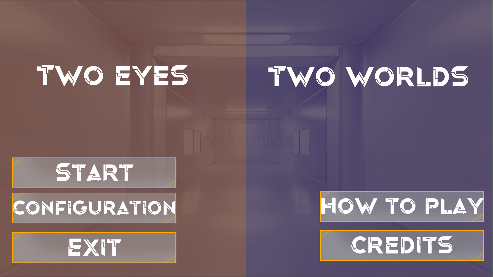

Proyectos Destacados

Two Eyes: Two Worlds
Videojuego en el que se experimenta con la inversión de gravedad, interacción con diferentes objetos de colores, botones, placas de presión y parkour.
Mi rol en este proyecto fue programar las interacciones entre el jugador y los objetos: agarrar un objeto, presionar un botón. Esto también incluye la creación y programación de las animaciones que se activan al interactuar con los objetos.
Los miembros del equipo fueron: